Test report 16 – Text and SVG import
1 Task and result
From step 3 of plan 17: SVG import (subset, 17.5) and text with bundled free fonts (17.4). The custom stencil font "cad stencil mono" is not part of this (it needs stroke from step 2); the name is reserved as the future default font; until then JetBrains Mono is the default font (hint for font = "cad stencil mono").
text(t, size, font, halign, valign, spacing, direction, language, script): exact outlines (TrueType quadratic, CFF cubic), kerning and ligatures viarustybuzz, holes by nonzero,color()as usual. Bounding box and area against OpenSCAD 2021.01 with the same font files: bounding box ≤ 0.004 mm, area ≤ 0.28 % (OpenSCAD samples the curves).import("….svg", id, scale, dpi = 96, center): paths (all commands), rectangles with rounding, circles and ellipses exact, polygons, groups and nestedsvgwithtransform, units,fill-rule,display:none; everything else with a warning and the SVG line.- Files relative to the including file (CLI: file system; browser: project files; desktop: reads and writes them); changed SVGs change the cache key,
cad watchfollows them, and so does the UI scene (T02). - Required character set with umlauts, ß/ẞ and punctuation in all bundled fonts (test); gaps (Allerta Stencil only) are filled from JetBrains Mono with a warning.
- Along the way: color regions of models that are only unions of their color nodes, without a Boolean with the whole (multicolor text: seconds instead of abort by the watchdog).
- Found with the alphabet chart: SMLib united disjoint glyph parts wrongly (Allerta "c": one piece twice, once reversed; volume 2.0 instead of 7.3 mm³, "a" in "abcd" disappeared, without a message). The facade now unites bodies with disjoint bounding boxes without an SMLib Boolean (
disjoint_union: both shells into one B-rep); regression testtext_volume_is_area_times_height.
2 Decisions
| Question | Decision |
|---|---|
| Libraries | roxmltree 0.21 (XML, line numbers for messages), rustybuzz 0.20.1 with ttf-parser 0.25 (shaping like HarfBuzz, outlines, pure Rust, Wasm-capable). Path data, transformations, units, arcs, fill rules: own code. |
| Split | New crates cad-outline (neutral contours), cad-svg, cad-font; in cad-eval only the builtins (import.rs) and loading of data files (Project::assets). IR: Seg::Nurbs (from step 2) for B-spline chains and elliptical arcs. Engine unchanged except for the color regions; facade: union of disjoint bodies without an SMLib Boolean (below). |
| Profile nodes | One Profile::Sketch per filled SVG element or per glyph, several under a group (union): overlapping elements or glyphs give the union, as in painting; within one element its fill rule decides. |
| Curves | Tangent-continuous chains of Bézier curves of a glyph or a path become one B-spline (C1 knots, parameter lengths from the tangent lengths; exact); corners separate them. Fewer kernel faces (glyph "o": 4 instead of ~30). |
Size size | as in OpenSCAD: em = size/0.72 (OpenSCAD sets the font at size points at 100 dpi); cap height ≈ size. Advance, offset and alignment times 1000/1024 as in OpenSCAD (its FreeType conversion): text stays as wide as in OpenSCAD. |
| Alignment | halign by the advance, valign by the glyph bounding box (top/center/bottom), baseline 0; vertical text with the offsets from the shaper (centered as in OpenSCAD). |
| Default font | JetBrains Mono Regular until "cad stencil mono" exists (name reserved, hint). Unknown family: warning + JetBrains Mono; unknown style: warning + Regular of the family. |
| Missing characters | Per-character fallback to JetBrains Mono of the same weight (OS/2 weight ≥ 600 → Bold) with a warning at the statement: a readable character in its place is more useful than a box or a gap that is overlooked when printing; JetBrains Mono covers the required character set and much more. Allerta Stencil stays unmodified (Reserved Font Name "Allerta": modified versions may not use that name). |
| SVG units | as in OpenSCAD where it is consistent; default dpi = 96 (OpenSCAD 2021.01: 72 for numbers without a unit). Deviations see 5.3. |
| Files | Every string in the project that ends in .svg/.ttf/.otf/.ttc/.otc is read on load (also parameter default values); binary files are stored in text projects (browser, SetFiles) as a data: URL. A name composed at run time that appears nowhere as a string: error "nicht geladen" ("not loaded"). |
3 Fonts
Bundled in crates/cad-font/fonts/ (SIL OFL 1.1, license texts and sources with checksums in fonts/README.md), embedded with include_bytes!: AllertaStencil-Regular.ttf 20 KiB, Inter-Bold.ttf 411 KiB, Inter-Regular.ttf 402 KiB, JetBrainsMono-Bold.ttf 271 KiB, JetBrainsMono-Regular.ttf 267 KiB. Selection by family and style as in OpenSCAD ("Inter:style=Bold"), custom fonts by path (font = "datei.ttf") or by upload in the UI (T03).
Alphabet charts
Per font text(…, size = 8), extruded 0.6 mm, viewed from above (generator tools/report/report16-data.sh). Rows 3–5: digits, umlauts and punctuation of the required character set.
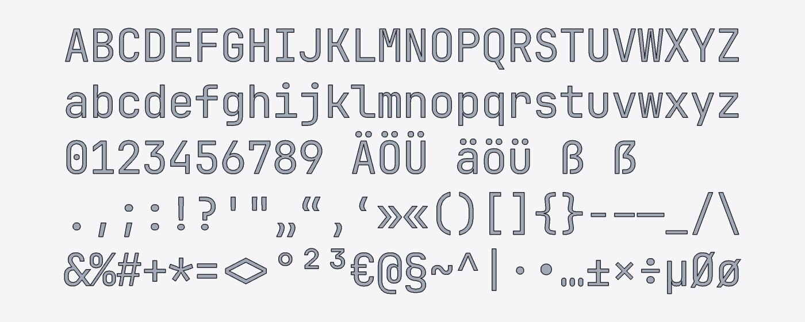
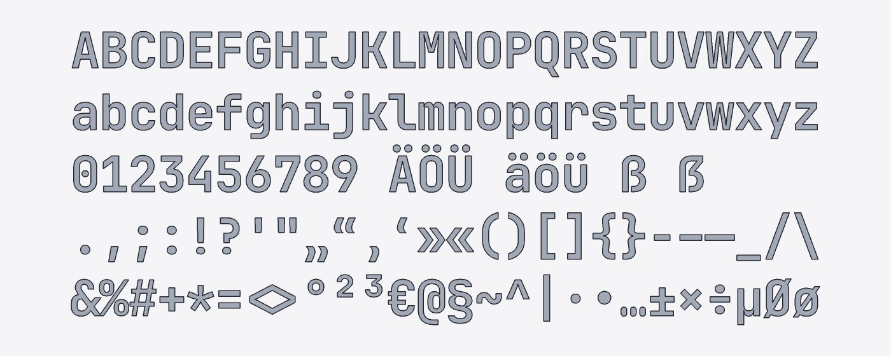
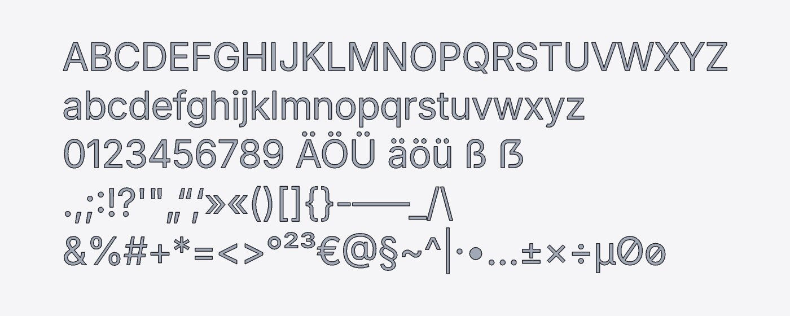
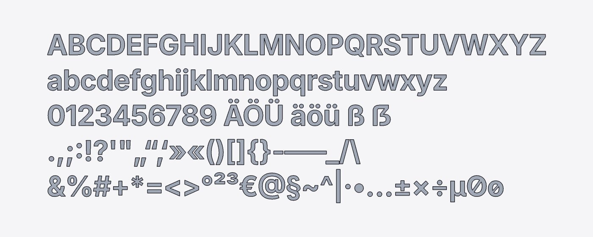
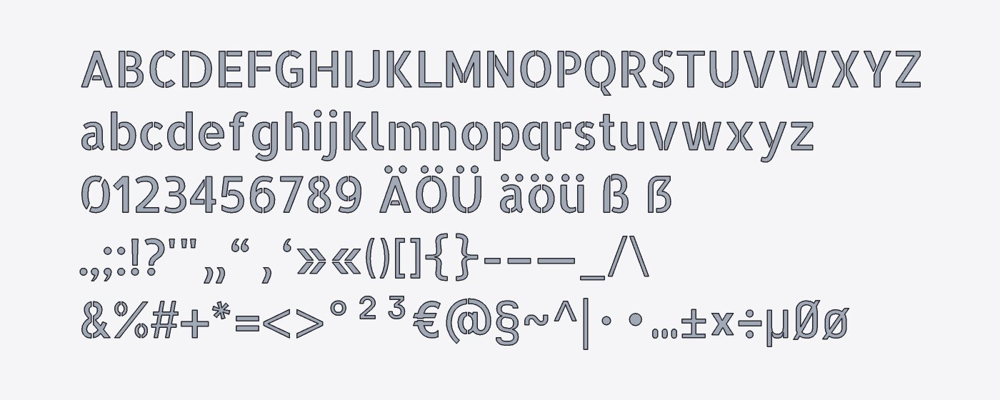
Required character set
cad_font::REQUIRED_CHARS (test required_chars_in_every_font: every bundled font has a real glyph for each character, no .notdef): A–Z a–z 0–9, Ä Ö Ü ä ö ü ß ẞ, space, . , ; : ! ? ' " „ “ ‚ ‘ » « ( ) [ ] { } - – — _ / \ & % # + * = < > ° ² ³ € @ § ~ ^ | · • …, ± × ÷ µ Ø ø. Also applies to the future stencil font (plan 17.4).
| Font | missing characters | Consequence |
|---|---|---|
| JetBrains Mono Regular/Bold | none | – |
| Inter Regular/Bold | none | – |
| Allerta Stencil | ẞ „ ‚ { } _ # ° ² ³ § ~ ^ · • … ± µ Ø ø | from JetBrains Mono Regular, warning (see chart: these characters are not stenciled) |
cases/fallback.scad:1:24: Warnung (Auswertung): Zeichen „°±“ fehlen in Allerta Stencil; ersetzt aus JetBrains Mono Regular cases/fallback.scad: 0 Fehler, 1 Warnungen
4 Text against OpenSCAD 2021.01
Same font files (OpenSCAD via a fontconfig file that knows only crates/cad-font/fonts), text(…) exported as 2D (polygons) against cad measure --bounds --volume of a 1 mm extrusion (tools/report/report16-openscad.py). Bounding box in x (top) and y (bottom), mm.
| Case | OpenSCAD bbox | cad bbox | max. dev. | OpenSCAD mm² | cad mm² | Area |
|---|---|---|---|---|---|---|
| Inter 'H' | 1.221 … 9.101 0.000 … 10.105 | 1.221 … 9.101 0.000 … 10.105 | 0.0000 | 32.082 | 32.082 | 0.002 % |
| Inter:style=Bold 'H' | 0.915 … 9.460 0.000 … 10.105 | 0.916 … 9.460 0.000 … 10.105 | 0.0000 | 49.421 | 49.422 | 0.001 % |
| JetBrains Mono 'H' | 1.292 … 7.041 0.000 … 10.138 | 1.292 … 7.042 0.000 … 10.139 | 0.0007 | 29.044 | 29.049 | 0.015 % |
| JetBrains Mono:style=Bold 'Hamburg' | 1.069 … 56.091 -2.500 … 10.138 | 1.069 … 56.092 -2.500 … 10.139 | 0.0007 | 235.350 | 235.737 | 0.164 % |
| Allerta Stencil 'H' | 1.275 … 8.883 0.000 … 9.996 | 1.275 … 8.884 0.000 … 9.996 | 0.0006 | 37.000 | 37.005 | 0.014 % |
| Inter 'AV' | 0.353 … 17.661 0.000 … 10.105 | 0.353 … 17.661 0.000 … 10.105 | 0.0001 | 54.797 | 54.799 | 0.004 % |
| Inter 'O' | 0.827 … 9.793 -0.136 … 10.240 | 0.827 … 9.793 -0.136 … 10.240 | 0.0001 | 33.163 | 33.257 | 0.283 % |
| Inter 'Hello World' | 1.221 … 73.349 -0.163 … 10.105 | 1.221 … 73.349 -0.163 … 10.105 | 0.0000 | 229.351 | 229.494 | 0.062 % |
| Inter 'Größe' | 0.827 … 38.910 -0.163 … 10.430 | 0.827 … 38.910 -0.163 … 10.430 | 0.0000 | 130.494 | 130.710 | 0.166 % |
| Allerta Stencil 'ZUTRITT' | 1.058 … 56.991 -0.068 … 9.996 | 1.058 … 56.991 -0.068 … 9.996 | 0.0006 | 185.418 | 185.490 | 0.039 % |
| JetBrains Mono '->' | 0.986 … 15.429 0.486 … 8.680 | 0.985 … 15.430 0.486 … 8.681 | 0.0006 | 26.073 | 26.076 | 0.009 % |
| Inter 'fi' | 0.136 … 7.563 0.000 … 10.579 | 0.136 … 7.563 0.000 … 10.579 | 0.0001 | 29.216 | 29.234 | 0.062 % |
| Inter 'H', halign = "center", valign = "center" | -3.819 … 4.061 -4.934 … 5.170 | -3.819 … 4.061 -4.934 … 5.171 | 0.0004 | 32.082 | 32.082 | 0.002 % |
| Inter 'Hg', valign = "bottom" | 1.221 … 17.526 -0.066 … 13.036 | 1.221 … 17.526 -0.070 … 13.032 | 0.0040 | 66.071 | 66.052 | 0.029 % |
| Inter 'Hg', valign = "top" | 1.221 … 17.526 -12.866 … 0.236 | 1.221 … 17.526 -12.865 … 0.237 | 0.0009 | 66.071 | 66.052 | 0.029 % |
| Inter 'HH', spacing = 2 | 1.221 … 29.261 0.000 … 10.105 | 1.221 … 29.261 0.000 … 10.105 | 0.0000 | 64.164 | 64.165 | 0.002 % |
| Inter 'HH', direction = "ttb" | -3.819 … 4.061 -29.551 … -3.035 | -3.819 … 4.061 -29.551 … -3.035 | 0.0001 | 64.164 | 64.165 | 0.002 % |
| Inter 'H', halign = "right" | -8.859 … -0.979 0.000 … 10.105 | -8.859 … -0.979 0.000 … 10.105 | 0.0000 | 32.082 | 32.082 | 0.001 % |
| Inter 'Text', size = 25 | 1.662 … 68.083 -0.407 … 25.262 | 1.662 … 68.083 -0.407 … 25.262 | 0.0001 | 503.680 | 504.016 | 0.067 % |
OpenSCAD's area is smaller because it samples the curves as polygons (chords inside the curve); the bounding box agrees to ≤ 0.001 mm (OpenSCAD writes 6 digits; its polygon vertices lie on the curve). OpenSCAD measures valign on rasterized glyph metrics (FreeType), hence up to 0.004 mm there. "Hello World", "AV" (kerning), "fi" and "->" (ligatures in JetBrains Mono) show that shaping and advance are identical.
5 SVG import
5.1 Examples: source and result
Left the SVG file as the browser draws it (source in examples/svg/, own drawings), right linear_extrude(2) import("….svg") from above.
logo.svg
Ring of half-circle arcs with a hole (evenodd), eight rotated rectangles with rounding, polygon
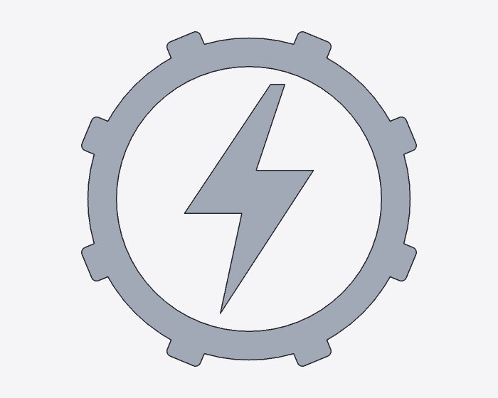
blatt.svg
cubic Bézier (C, S), vein as reverse direction (nonzero), stem from Q/T, rotated group
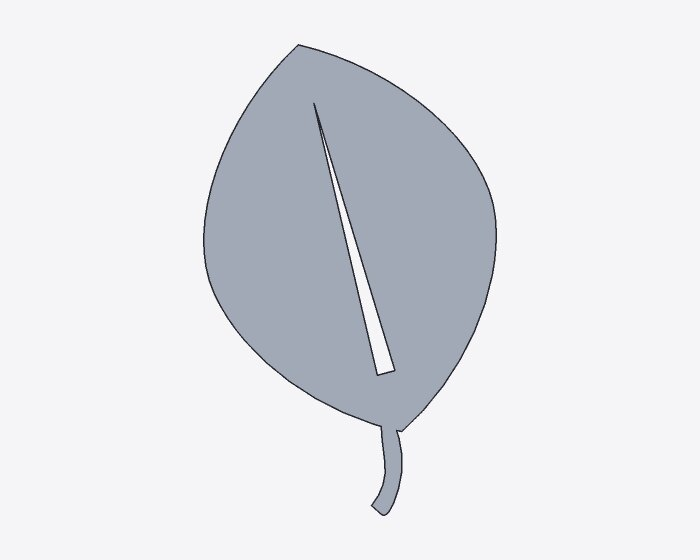
haus.svg
relative commands (h, v, m), windows and door as holes (evenodd), rectangle with rx, scaled group with a circle
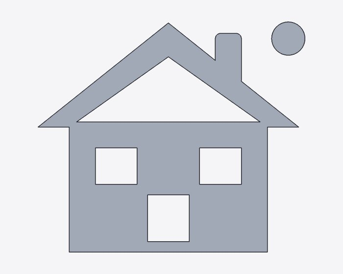
welle.svg
Q/T wave, ellipse, circle with scale(2 1) (elliptical arcs), skewX, rotated elliptical arc (A)
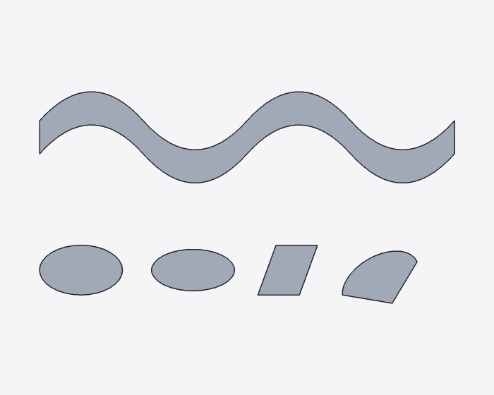
5.2 Supported and unsupported
| Element / property | Implementation |
|---|---|
path | M L H V C S Q T A Z, absolute and relative, implicit repetition, compact numbers (10-10.5.5) and arc flags (a10 10 0 0110 10); on error the part before it is kept, warning |
Arcs A, circle, ellipse, rect rx/ry | exact circular arcs (under similarity transforms), otherwise exact elliptical arcs (rational B-spline); radii too small → scaled up as in SVG |
polygon · polyline, line, open paths | area · path only (warning "offener Pfad wird nicht gefüllt" – "open path is not filled"); paths only → open sketch (as a sweep path) |
g, a, nested svg, transform | matrix, translate, scale, rotate (also about a point), skewX, skewY; lists from right to left |
viewBox, width/height, preserveAspectRatio | px, mm, cm, in, pt, pc, without unit (dpi); origin bottom left |
fill, fill-rule, display, visibility | as attribute and in style, inherited; fill="none": not imported (warning) |
Text, images, use, CSS classes/<style>, masks, clip paths, filters, gradients/patterns as fill, stroke width | warning with the SVG line (once per message); gradients are imported as a plain area |
Metadata (Inkscape, Sodipodi, defs, title) | silently skipped |
id = "…" | only this element (with its content); unknown: error |
<svg xmlns="http://www.w3.org/2000/svg" width="40mm" height="20mm" viewBox="0 0 40 20">
<style>.a { fill: red }</style>
<rect class="a" width="20" height="20"/>
<text x="22" y="12">Hallo</text>
<image href="foto.png" width="10" height="10"/>
<path d="M 22 2 L 38 2 L 38 8" stroke="black" fill="none"/>
<use href="#r"/>
</svg>
cases/warn.scad:1:26: Warnung (Auswertung): warn.svg:2: CSS-Stylesheet (`<style>`) nicht unterstützt cases/warn.scad:1:26: Warnung (Auswertung): warn.svg:3: `rect`: CSS-Klassen (`class`) nicht unterstützt; Stil nur aus Attributen und `style` cases/warn.scad:1:26: Warnung (Auswertung): warn.svg:4: `text`: Text nicht unterstützt (in Pfade umwandeln) cases/warn.scad:1:26: Warnung (Auswertung): warn.svg:5: `image`: Bilder nicht unterstützt cases/warn.scad:1:26: Warnung (Auswertung): warn.svg:6: `path`: offener Pfad wird nicht gefüllt (nur als Pfad übernommen; Z schließt ihn) cases/warn.scad:1:26: Warnung (Auswertung): warn.svg:6: Strichstärke (`stroke`) wird nicht als Fläche übernommen cases/warn.scad:1:26: Warnung (Auswertung): warn.svg:7: `use`: Verweise nicht unterstützt (Klone in Pfade umwandeln) cases/warn.scad:1:26: Warnung (Auswertung): warn.svg: 1 offene Pfade neben Flächen weggelassen cases/warn.scad: 0 Fehler, 8 Warnungen
5.3 Units and comparison with OpenSCAD
OpenSCAD 2021.01 (import(…, dpi = 96), exported as 2D) against cad. With a viewBox both agree. Intentional deviations (SVG rule instead of OpenSCAD quirk): without a viewBox OpenSCAD takes user units as mm but mirrors about the height in pixels (row "ohne-viewbox"); a y offset of the viewBox is added by OpenSCAD instead of subtracted; OpenSCAD always fills by evenodd and turns strokes into areas.
| File | OpenSCAD bbox | cad bbox | max. dev. | OpenSCAD mm² | cad mm² | Area |
|---|---|---|---|---|---|---|
| logo.svg | 1.311 … 38.689 1.311 … 38.689 | 1.311 … 38.689 1.311 … 38.689 | 0.0006 | 492.531 | 492.893 | 0.073 % |
| blatt.svg | 2.039 … 26.136 2.551 … 41.319 | 2.033 … 26.141 2.549 … 41.319 | 0.0055 | 536.447 | 536.858 | 0.077 % |
| haus.svg | 5.000 … 56.200 2.000 … 46.200 | 5.000 … 56.200 2.000 … 46.200 | 0.0000 | 1,075.692 | 1,075.832 | 0.013 % |
| welle.svg | 2.500 … 52.500 2.000 … 27.500 | 2.500 … 52.500 2.000 … 27.500 | 0.0000 | 352.785 | 353.326 | 0.153 % |
| mm-viewbox | 5.000 … 29.000 36.000 … 47.500 | 5.000 … 29.000 36.000 … 47.500 | 0.0000 | 100.059 | 100.265 | 0.207 % |
| px-viewbox | 2.646 … 15.346 5.821 … 11.906 | 2.646 … 15.346 5.821 … 11.906 | 0.0000 | 28.018 | 28.076 | 0.207 % |
| in-viewbox | 2.540 … 14.732 5.588 … 11.430 | 2.540 … 14.732 5.588 … 11.430 | 0.0000 | 25.822 | 25.875 | 0.206 % |
| ohne-viewbox (without viewBox) | 10.000 … 58.000 -14.771 … 8.229 | 2.646 … 15.346 5.821 … 11.906 | 42.6542 | 400.236 | 28.076 | 92.985 % |
6 Examples
examples/spec/text_schild.scad
// Purpose: sign with relief text (plan 17.4, report 16) – base plate with a rim, raised text in
// two fonts – multicolor (3MF with one filament per color).
// Fonts: bundled are JetBrains Mono (default), Inter and Allerta Stencil, each with
// a style (`"Inter:style=Bold"`); custom fonts with `font = "datei.ttf"` (file in the project).
// `size` as in OpenSCAD: cap height about `size`.
breite = 100;
hoehe = 44;
dicke = 3;
r = 5; // corner radius
rand = 2; // width of the rim
relief = 1.2; // height of text and rim
module platte(b, h, r) sketch {
start([r, 0]);
line(to = [b - r, 0]);
arc(center = [b - r, r], angle = 90);
line(to = [b, h - r]);
arc(center = [b - r, h - r], angle = 90);
line(to = [r, h]);
arc(center = [r, h - r], angle = 90);
line(to = [0, r]);
arc(center = [r, r], angle = 90);
}
color("white") linear_extrude(dicke) platte(breite, hoehe, r);
// rim
color("blue") translate([0, 0, dicke]) linear_extrude(relief) difference() {
platte(breite, hoehe, r);
translate([rand, rand]) platte(breite - 2 * rand, hoehe - 2 * rand, r - rand);
}
// title and subtitle raised
color("red") translate([breite / 2, 26, dicke])
linear_extrude(relief) text("Werkstatt", size = 11, font = "Inter:style=Bold", halign = "center", valign = "center");
color("black") translate([breite / 2, 9, dicke])
linear_extrude(relief) text("ZUTRITT NUR MIT BRILLE", size = 4.2, font = "Allerta Stencil", halign = "center");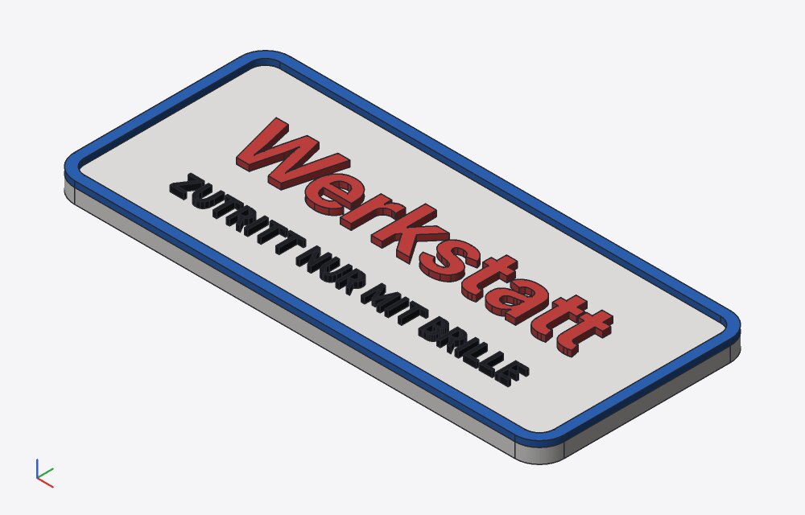
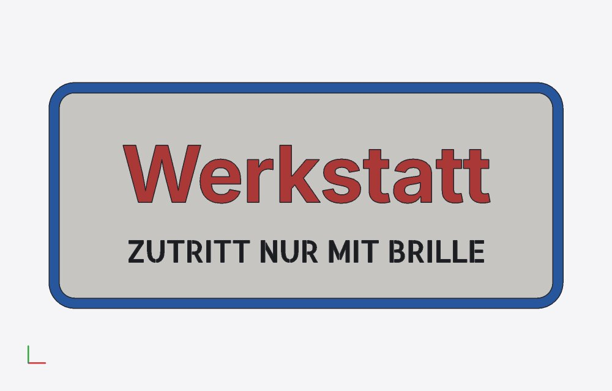
Farben (Filament, Farbe, Volumen, Masse PLA 1,24 g/cm³): F1 white #f4f3f0 13135.6195 mm³ 16.29 g Z.26 F2 blue #2e65b9 655.5186 mm³ 0.81 g Z.29 F3 red #c74240 445.7077 mm³ 0.55 g Z.35 F4 black #202225 117.2133 mm³ 0.15 g Z.37
examples/spec/svg_logo.scad
// Purpose: SVG import (plan 17.5, report 16) – logos and icons from examples/svg as exact 2D profiles.
// Circles and arcs stay circular arcs, Bézier curves stay curves, holes by fill-rule.
// Units: viewBox + width/height in mm; without viewBox pixels with dpi (default 96).
dicke = 3;
// logo, centered on the origin (center = true)
color("blue") linear_extrude(dicke) import("../svg/logo.svg", center = true);
// leaf, scaled down to 70 %
translate([45, 0, 0])
color("green") linear_extrude(dicke) import("../svg/blatt.svg", center = true, scale = 0.7);
// house as an engraving in a plate
translate([0, -50, 0]) difference() {
color("silver") translate([-34, -27, 0]) cube([68, 54, dicke]);
color("red") translate([0, 0, dicke - 1]) linear_extrude(2) import("../svg/haus.svg", center = true);
}
// only single elements of the SVG (id): non-uniformly scaled circle (exact elliptical arcs),
// rotated elliptical arc
translate([70, -35, 0]) color("orange") linear_extrude(dicke) import("../svg/welle.svg", id = "oval", center = true);
translate([70, -60, 0]) color("teal") linear_extrude(dicke / 2) import("../svg/welle.svg", id = "bogen", center = true);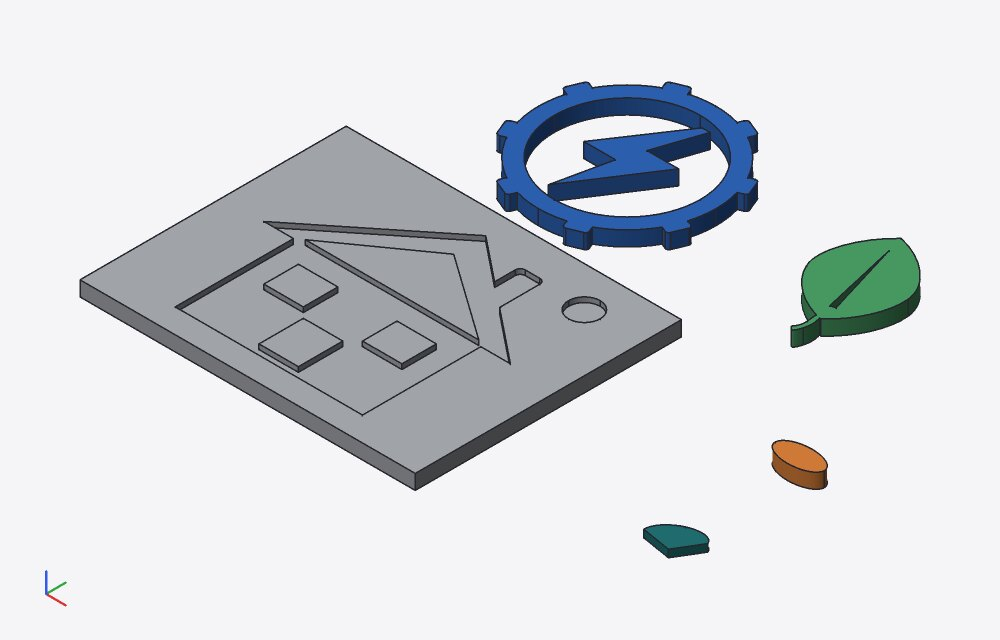
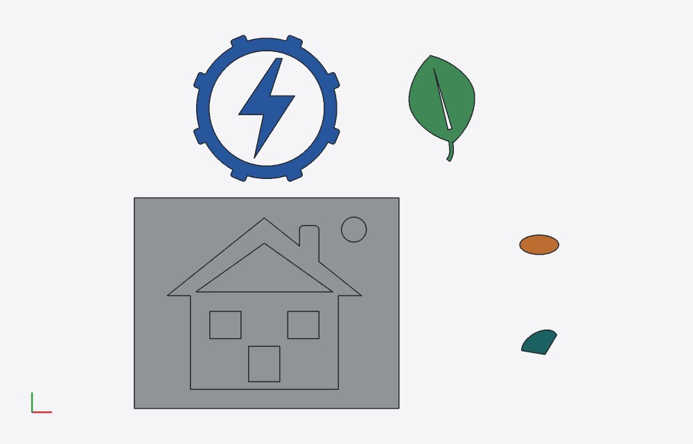
STEP of svg_logo: {"CIRCLE": 78, "LINE": 253, "ELLIPSE": 4, "B_SPLINE_CURVE_WITH_KNOTS": 27, "PLANE": 85, "CYLINDRICAL_SURFACE": 39, "SURFACE_OF_LINEAR_EXTRUSION": 13, "B_SPLINE_SURFACE_WITH_KNOTS": 0}
– circles stay CIRCLE, extruded arcs CYLINDRICAL_SURFACE.
7 Measurements
Kernel time
Release build, cad eval --json without daemon, median of 3 runs (language = evaluation including shaping and SVG; kernel = all kernel calls). Browser: the same models in Chromium (SMLib as Wasm, T05).
| Model | Nodes | Kernel calls | Language ms | Kernel ms native | Kernel ms browser |
|---|---|---|---|---|---|
| "Hello World" (Inter), extruded | 13 | 20 | 0.7 | 505 | 918 |
| 40 characters (Inter), extruded | 36 | 61 | 1.1 | 2,249 | 2,904 |
| 40 characters (JetBrains Mono) | 36 | 61 | 1.2 | 1,917 | – |
| "Hello World" on a plate (union) | 15 | 24 | 0.7 | 1,449 | – |
| examples/spec/svg_logo.scad | 41 | 45 | 0.8 | 1,429 | – |
| examples/spec/text_schild.scad | 50 | 66 | 1.3 | 10,550 | – |
Per glyph: one extrusion per contour (outer, hole), difference for holes, one union of all glyphs (they do not touch). Text on a face is expensive: SMLib imprints each glyph into the top face (sign: one union of ≈ 9 s native). The new color region rule (plan 17.10) avoids the Booleans with the whole here; before, the contact sheet of T01 took 21 s natively and failed ("Schnittmenge gescheitert" – "intersection failed"), now 4 s.
Wasm module
| raw | gzip -9 | |
|---|---|---|
cad_wasm_bg.wasm before (commit cafe7a4) | 1,799,439 B | 702,133 B |
| with text/SVG (before the merge of step 2) | 3,970,940 B | 1,696,909 B |
| after the merge with sketches step 2 (state of this report) | 4,120,239 B | 1,757,298 B |
| growth from text/SVG | +2,171,501 B | +994,776 B |
| of which font files | 1,404,056 B | – |
The rest of the growth is code (rustybuzz/ttf-parser, roxmltree, SVG and text logic). smlib.wasm: 5,285,361 B (+726 B from disjoint_union in the facade).
8 UI
Checks via the UI state (window.__cad), scenes and bounding boxes; screenshots from web/e2e/text-svg.spec.ts.
T01 Text in three fonts
Umlauts, ẞ and German quotation marks without a warning; colors as usual.
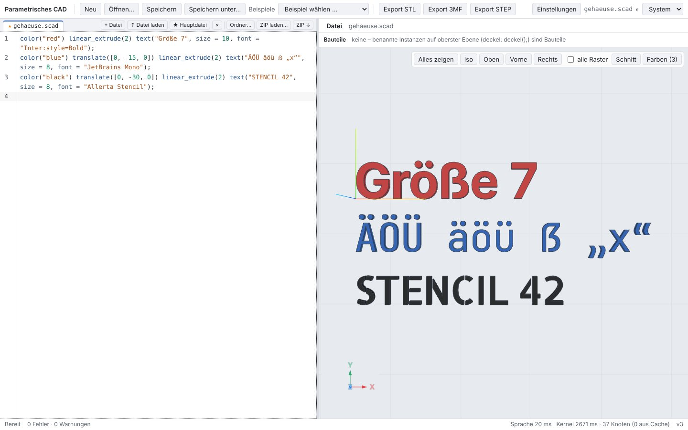
color("red") linear_extrude(2) text("Größe 7", size = 10, font = "Inter:style=Bold");
color("blue") translate([0, -15, 0]) linear_extrude(2) text("ÄÖÜ äöü ẞ „x“", size = 8, font = "JetBrains Mono");
color("black") translate([0, -30, 0]) linear_extrude(2) text("STENCIL 42", size = 8, font = "Allerta Stencil");- no errors/warnings
- width > 50 mm, height 2 mm
- "20°C" in Allerta Stencil: warning, ° from JetBrains Mono
T02 SVG as a project file, changed in the editor
The SVG is a project file (tab) and is changed in the editor; the scene recomputes (cache key from the content).
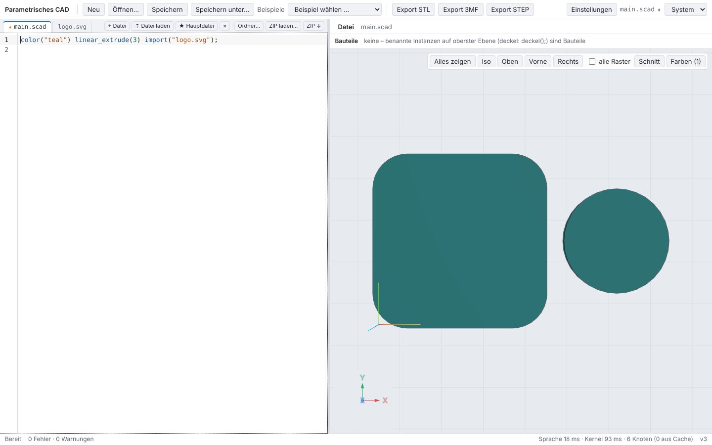
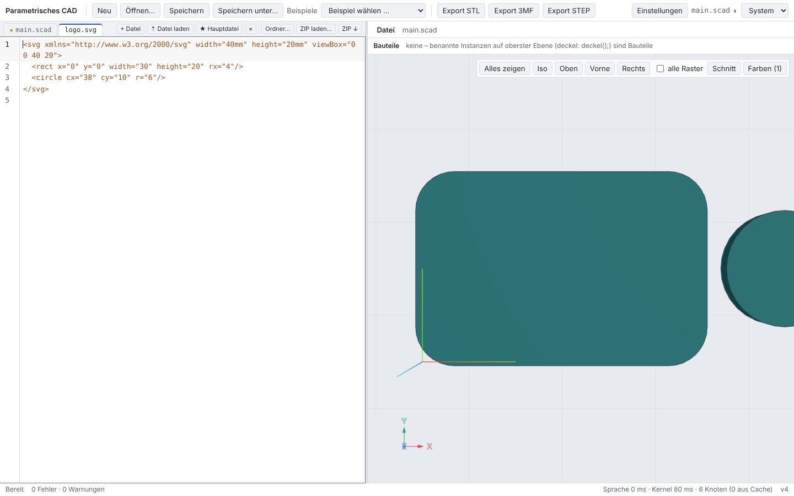
color("teal") linear_extrude(3) import("logo.svg");- width 34 mm
- after the change 44 mm
T03 Custom font (upload)
Binary files are stored in the project as a data URL; the engine decodes them. The tab does not open an editor.
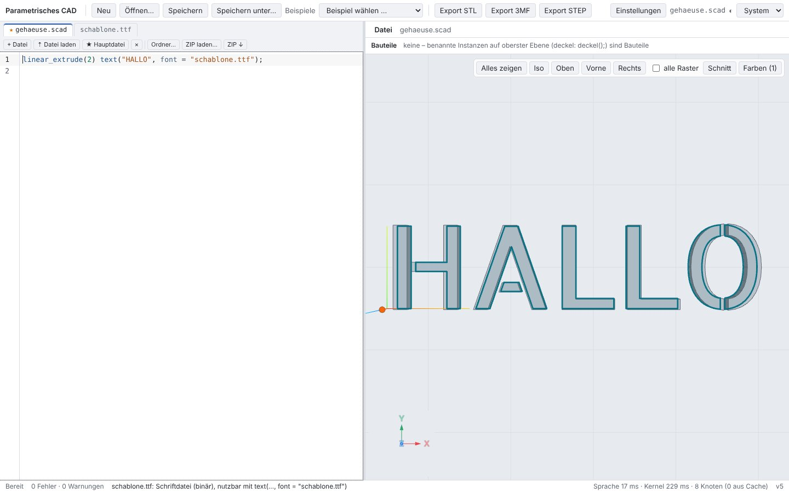
- file in the project
- no warning
- tab: hint instead of editor
T04 Example with SVG files
Single examples that import SVGs from examples/svg open as a project with these files.
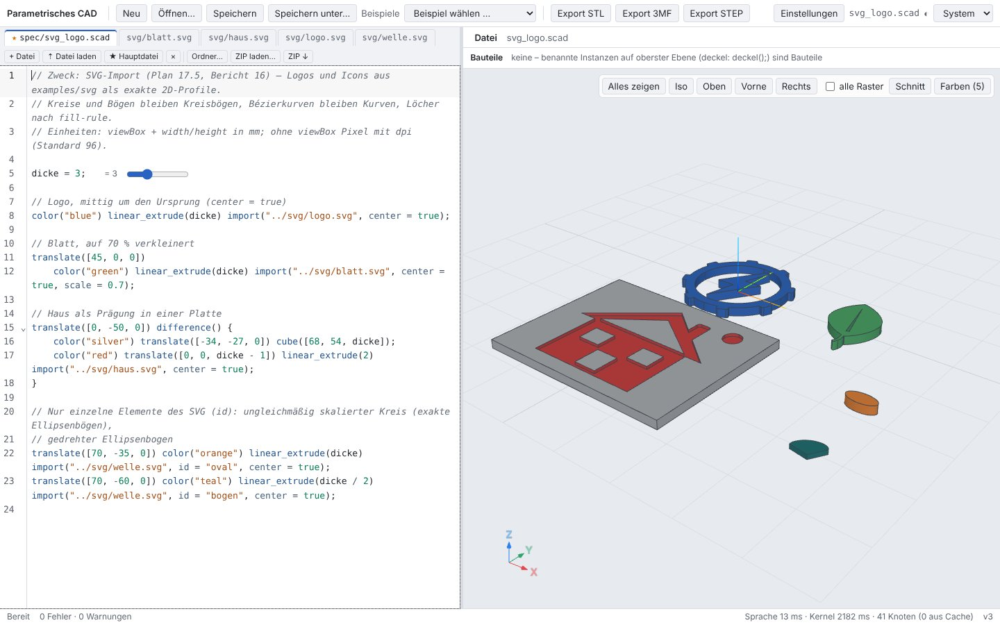
- 4 SVG files in the project
- no errors
- <text> in the SVG: warning "w.svg:3: …Text…"
9 Test runs
| Run | Result |
|---|---|
cargo test --workspace --no-fail-fast | 520 passed, 0 failed |
cargo clippy --workspace --all-targets -- -D warnings · cargo fmt --check | clean · clean |
pnpm typecheck · pnpm test (Vitest) | clean · 220 passed |
pnpm e2e (Playwright, Chromium) | 102 / 103 – failed: C16 drag point handle constrained to an axis (Shift, X/Y/Z) · C16 (drag point handle constrained to an axis, report 3) is timing-dependent (as already in report 15): test timeout in the full run and on its own with -g C16; the whole file ui-c.spec.ts then passed 20/20 – it also failed on its own with the facade from before this step, so it is not affected by text/SVG. |
tests/openscad-compat/compare.py --eval | 36/36 |
tests/step/verify.py (OpenCASCADE) | 60/60 passed |
tests/alltag/check.sh | 19 models, 0 with problems, 56 s, exports in /tmp/alltag-2sczuntc (deleted) |
node crates/kernel-smlib/js/test-node.mjs | passed |
New or changed Rust tests (42):
import_volume_warning_and_step ok · watch_follows_a_changed_svg ok · text_volume_is_area_times_height ok · examples_check_clean ok · data_urls_roundtrip ok · import_open_paths_are_a_path ok · import_svg_gives_sketch_profiles ok · changed_svg_changes_the_tree ok · import_relative_to_the_file_and_errors ok · text_with_a_font_file ok · text_profiles_and_fonts ok · unsupported_operations_keep_children ok · tests::fallback_to_jetbrains_mono ok · tests::font_names ok · tests::glyph_o_has_a_hole ok · tests::directions ok · tests::align_and_spacing ok · tests::kerning_pair_av ok · tests::cff_outlines_are_cubic ok · tests::user_font_data ok · tests::hull_and_area_like_openscad ok · tests::required_chars_in_every_font ok · tests::normalize_rules ok · tests::circle_area_and_mirror ok · path::tests::arcs_exact ok · path::tests::errors ok · path::tests::commands_absolute_relative ok · path::tests::implicit_lineto_and_compact_numbers ok · path::tests::smooth_curves_reflect ok · tests::nested_svg_viewport ok · tests::hidden_and_unfilled ok · tests::errors ok · tests::open_paths_are_paths ok · tests::fill_rules ok · tests::select_by_id ok · tests::units_viewbox_like_openscad ok · tests::transforms ok · tests::shapes_exact ok · tests::units_without_viewbox_are_pixels ok · tests::unsupported_warns_with_line ok · tests::transforms_before_grid ok · spec_models_stage1 ok
SVG (cad-svg): path commands, arcs and flags, transformations, units with OpenSCAD reference values, fill rules, hidden/unfilled elements, warnings with line, id, error cases. Text (cad-font): bounding box and area against OpenSCAD (20 cases), glyph "O" with a hole, kerning "AV", alignment, directions, font names, custom font, CFF outlines, required character set, fallback. cad-eval: profiles, project files, errors, data URLs. CLI: examples, volume, STEP circle, watch follows the SVG. Vitest: data files (web/src/logic/files.test.ts).
10 Limitations
- The custom stencil font is missing (step 3, after
stroke); Allerta Stencil lacks 20 characters of the required character set (taken from JetBrains Mono, not stenciled). - Kernel time: many glyphs on a common face are expensive (the union in SMLib grows superlinearly: 9 glyphs ≈ 1.5 s, 28 ≈ 9 s native); in the browser it takes about 1.3 to 1.8 times as long; a single kernel call over 15 s triggers the watchdog.
- Fill rules assume non-intersecting contours within one element (fonts with overlapping contours, e.g. some variable fonts, and self-intersecting SVG paths are not resolved). Variable fonts only in the default instance.
- SVG: no text, no
useclones, no CSS classes, no strokes as areas, no masks/clip paths; percent and em lengths are treated like plain numbers. - File names must appear as strings in the project (a name composed at run time is not loaded).
- Found with the logo: the facade computed unions of extruded sketch arcs over 90° wrongly (sketches step 1); fixed in step 2 (
profile::split_arcs), the interim workaround in the import was removed. - STEP: the writer now writes extrusions of elliptical arcs as an extrusion of an
ELLIPSE(OpenCASCADE had integrated the rational B-spline wrongly by 3.6·10−3). Open: OpenCASCADE measures the extrusion of the quadratic Q/T wave fromwelle.svg3 % too small (kernel 652.25 mm², analytical 652.19 mm²) –svg_logo.scadtherefore takes only the ellipse and the arc fromwelle.svg; the wave itself is shown in 5.1. - Default alignment of vertical text as in OpenSCAD (shaper offset);
valignby the actual glyph bounding box (OpenSCAD: rasterized FreeType metrics, ≤ 0.005 mm).